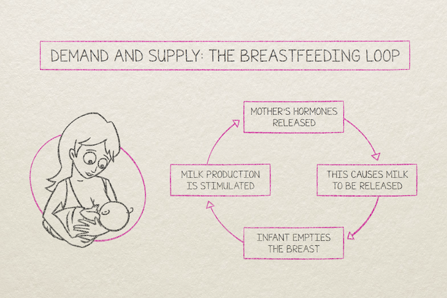

Milk supply
Breastmilk is the normal food for babies. Many mums worry that they don't have enough milk but every time you breastfeed your baby (or express milk), messages between your brain and breasts signal your body to make more milk to build up your milk supply.
More feeding = more signals = more milk 
It usually takes from birth to 6 weeks to establish your milk supply. By then, your body should be used to making milk for your baby and you will find your breasts start to feel softer and less full than they used to. This is normal and does not mean your milk supply is reducing, it just means your breasts are getting good at giving milk on demand!
See more here on how to:
Remember:
- babies that are attached on properly get very good at removing all milk from your breasts
- expressing to try to 'measure' how much milk you make doesn't really work as your baby is better at getting out your milk than your hand or a breast pump
- feeding your baby whenever they are hungry is the best way to keep up your milk supply
- feeding less from your breasts means your body will make less milk (even if it's just one feed)
This video answers common questions about breastfeeding. A lactation consultant says most mums can make plenty of milk for their baby. She talks about typical weight gain, and how to know whether your baby is getting enough milk. She talks about changes in the amount of milk you produce in the weeks after birth and whether you need to express milk.
Video: Is my baby getting enough milk?
Sourced from the Raising Children website, Australia's trusted parenting website. For more parenting information, visit raisingchildren.net.au.